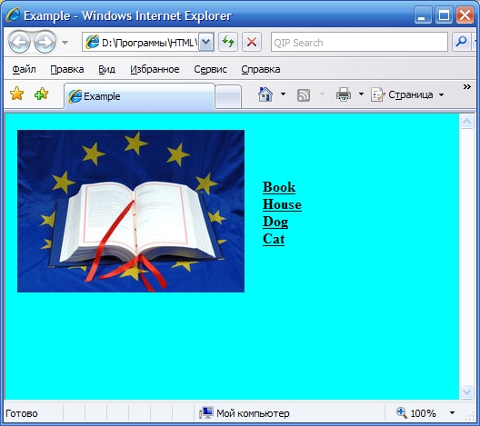

Лабораторные задания по курсу "Введение в Интернет"
Выведите несколько названий картинок. Сделайте так, чтобы при наведении указателя мыши на название рядом появлялась соответствующая картинка. При первом запуске отобразите первую картинку.
Это должно выглядеть приблизительно так:

Пример. Рисунок меняется каждый раз, когда указатель мыши наводится на другое название картинки.